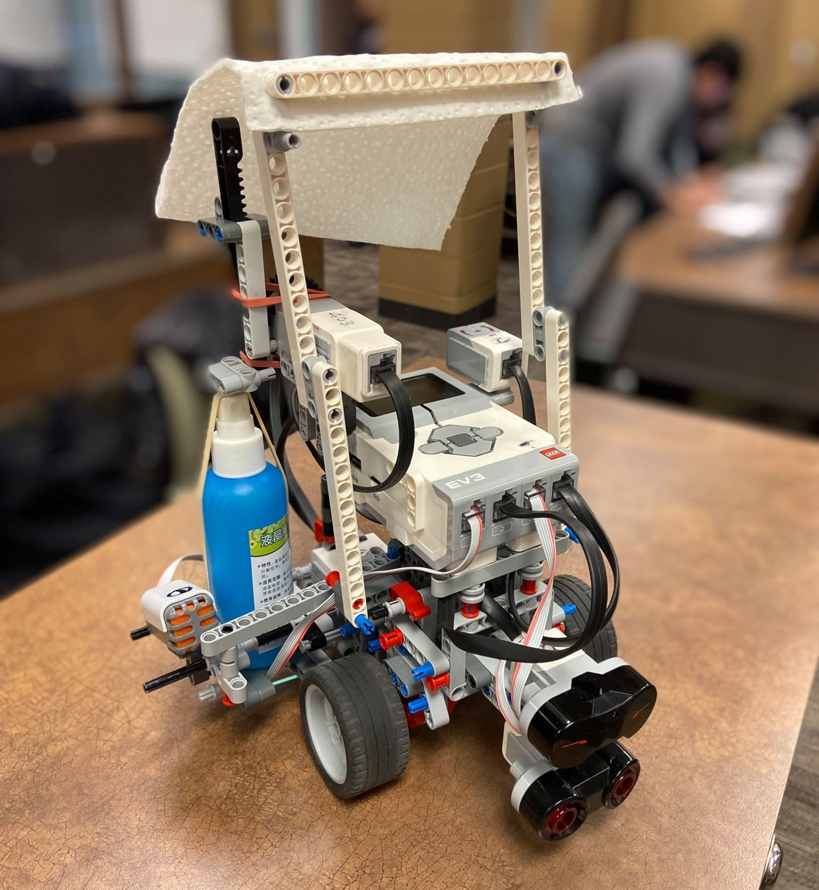

Dubbed "FIME" (Fire Is My Enemy) this is a robotics project I completed in a group in a recent course (GENE 121)
The robot
FIME is made with LEGO Mindstorms as per the guidelines of the project. It uses continuous servo motors to move, a sound sensor for startup, an ultrasonic sensor for wall detection, and an infrared senso for fire detection. To combat fires, it sprays with a spray bottle, and batters it with a towel. As we weren't allowed to use real fire, a infrared beacon was used to simulate it. I found working with LEGO underwhelming, so I focused on implementing path finding.
FIME is activated by a large sound (in place of a fire alarm system), and then locates the fire by rotating around. It uses recursive path finding to manuevuer through obatacles towards the fire. Once close enough, it performs the extinguishing cycle. When the beacon is turned off, FIME returns to its starting point so that it can charge. I learned how to collaborate effectively on an engineering project here,and I hope to apply this during co-op.